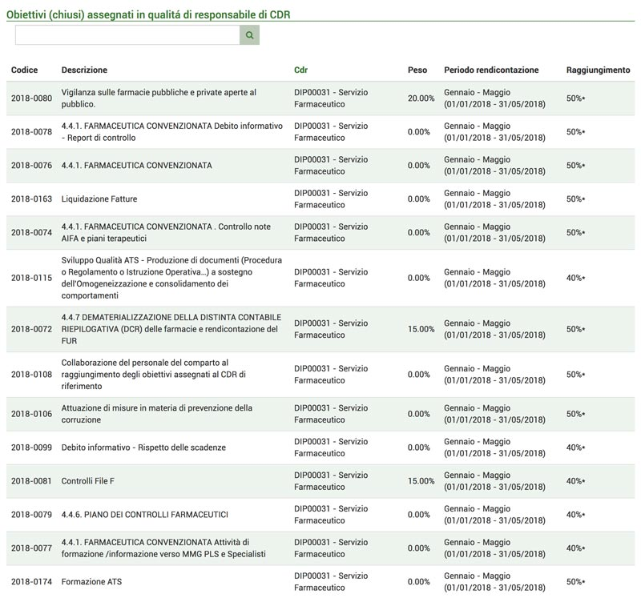
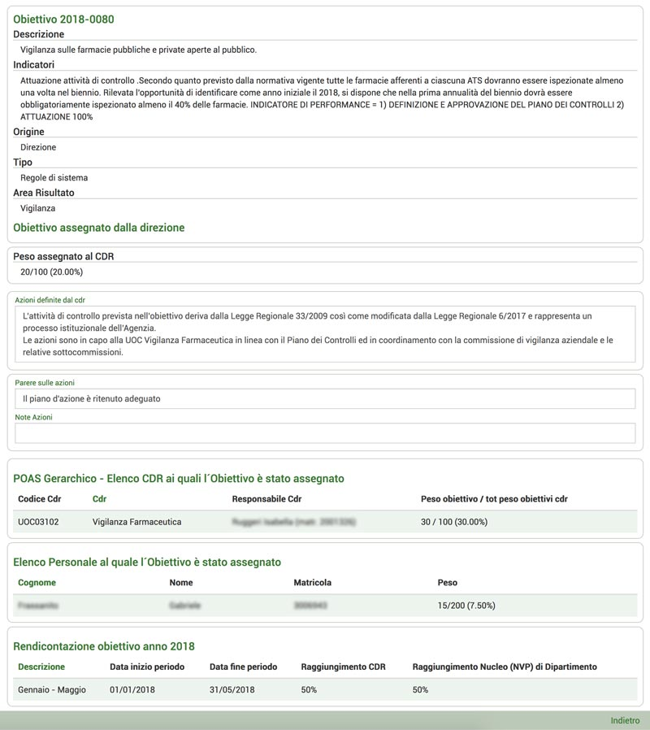
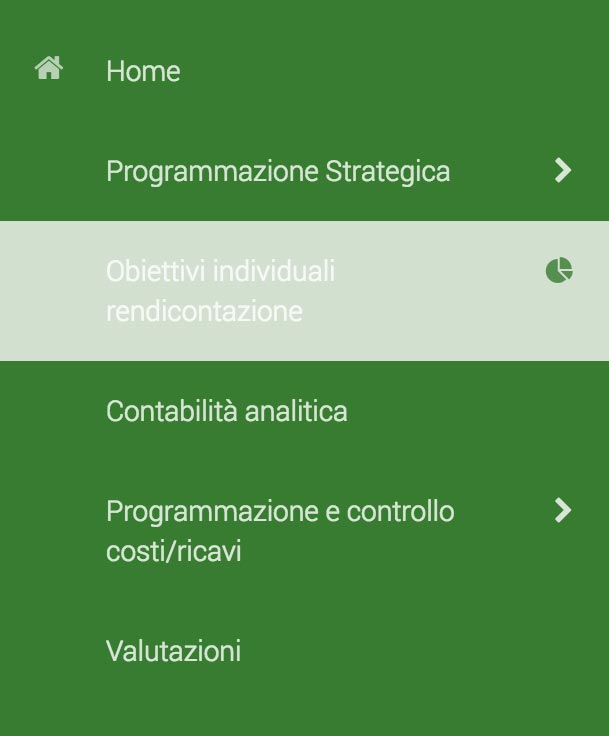
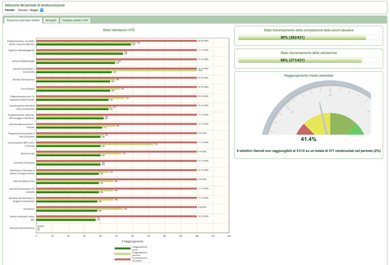
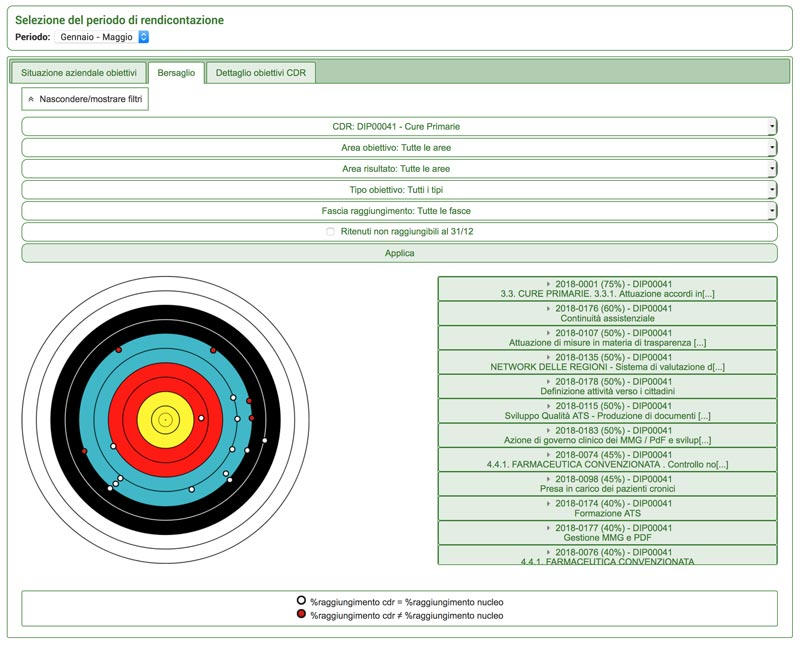
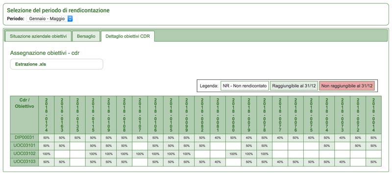

Obiettivi individuali rendicontazione
Accedendo alla pagina “Obiettivi individuali rendicontazione” viene visualizzata una tabella riportante gli obiettivi di cui si è responsabili e quelli che sono stati assegnati alla persona. In alto è possibile eseguire una ricerca dell’obiettivo desiderato.

Ogni riga è cliccabile per poter visualizzare i dettagli degli obiettivi; all’interno sono presenti le informazioni già analizzate nel capitolo sugli Obiettivi CDR.

Cliccando sulla riga dentro la tabella “Rendicontazione obiettivo anno...” saranno visibili i dettagli di rendicontazione di quel determinato obiettivo, con la scheda di compilazione del referente, come già spiegato nel capitolo Scheda rendicontazione obiettivo.
Cruscotto rendicontazione
Per accedere a questa pagina è necessario cliccare sull’icona del grafico a torta a fianco della voce di menù “Obiettivi individuali rendicontazione”.

Verrà quindi visualizzata la situazione aziendale degli obiettivi. In alto è possibile selezionare il periodo desiderato e successivamente visionare 3 schede.
Situazione aziendale obiettivi
Nella prima scheda è visualizzabile la situazione aziendale. Gli obiettivi visibili sono quelli assegnati ai diversi CDR dai membri della programmazione strategica.

Nello schema denominato “Stato Valutazioni ATS” è visualizzabile l’elenco dei CDR con la rendicontazione degli obiettivi assegnati ad ogni CDR. La prima barra, colorata di rosso, rappresenta la percentuale dello stato di avanzamento dell’inserimento della valutazione degli obiettivi ed il numero di obiettivi valutati.
La barra verde chiara rappresenta la percentuale di completamento totale degli obiettivi secondo il referente; mentre la barra verde scura rappresenta la percentuale di completamento secondo il nucleo di valutazione.
A fianco invece sono visibili lo stato di avanzamento della compilazione delle azioni attuative Nella sezione “Stato d’avanzamento della valutazione” è possibile visionare lo stato di avanzamento della valutazione generale, con la percentuale ed il numero di obiettivi valutati sul totale complessivo.
Nella sezione sottostante è possibile vedere il raggiungimento medio aziendale, esso rappresenta la percentuale media del raggiungimento degli obiettivi secondo il nucleo di valutazione. Esso riporta anche il numero di obiettivi ritenuti non raggiungibili entro la fine dell’anno; il totale degli obiettivi rendicontati; e la percentuale che questi obiettivi non raggiungibili rappresentano sul totale.
Bersaglio
Nella scheda bersaglio è possibile visionare maggiori informazioni e confrontarle tra loro. In alto è possibile utilizzare il filtro per selezionare gli obiettivi da visionare per il confronto.
É possibile filtrare tramite CDR coinvolto; l’area dell’obiettivo; l’area del risultato dell’obiettivo; il tipo di obiettivo; la percentuale raggiunta dall’obiettivo; e se visualizzare gli obiettivi non raggiungibili entro la fine dell’anno.

Una volta applicato il filtro comparirà nello spazio sottostante un bersaglio con a lato l’elenco degli obiettivi riportati in ordine di percentuale di completamento indicata dal nucleo.
Sul bersaglio saranno riportati dei punti rappresentanti gli obiettivi, per avere una visuale complessiva sulla percentuale di completamento dei diversi obiettivi.
Inoltre sarà possibile vedere quanti di questi hanno una percentuale di completamento corrispondente a quella valutata dal nucleo, e quanti invece differente.
Dettaglio obiettivi CDR
All’interno di questa scheda è possibile eseguire l’estrazione dei dati e scaricando il relativo file in formato Excel.
Nella tabella sottostante vengono invece riportati i CDR di cui si è responsabili e gli obiettivi con la percentuale con cui si stima che verranno completati a fine anno.
Cliccando su ciascuna casella sarà possibile visualizzare nei dettagli i diversi obiettivi.
Inoltre è possibile vedere quali obiettivi non risultano rendicontati; quali risultano raggiungibili entro fine anno; e quali invece non risultano raggiungibili.
